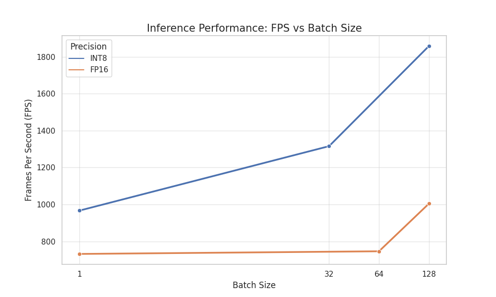
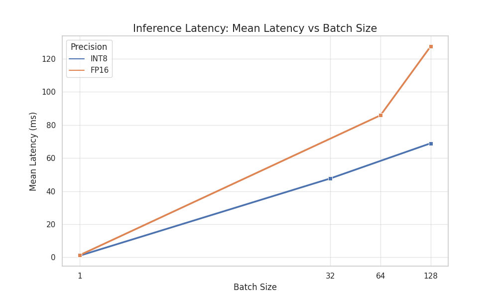
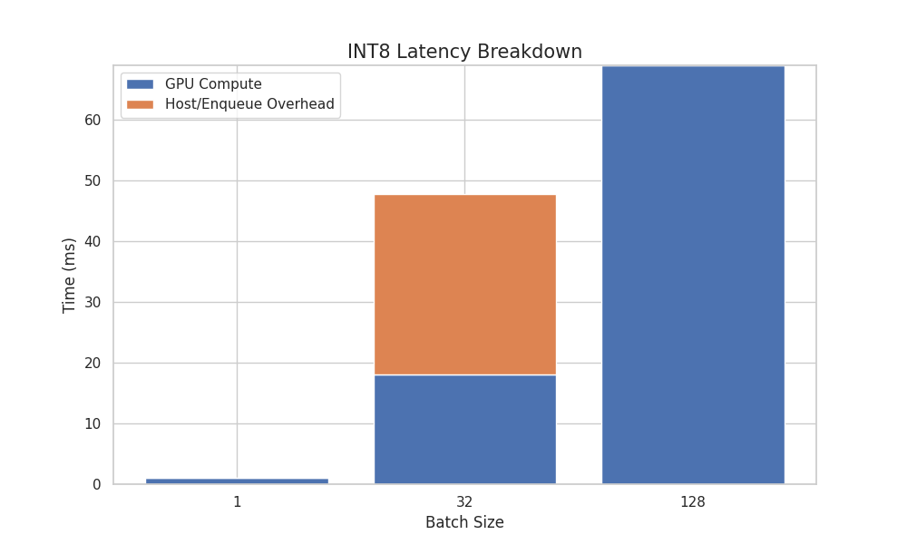

TRTInferX
A high-performance TensorRT inference engine for YOLOv11, with FP16 / INT8 deployment, CUDA-native preprocessing and post-processing, and a unified C++ runtime API.

Overview
TRTInferX is a deployment-oriented YOLOv11 inference engine built on TensorRT, CUDA, and C++17. Its goal is to turn an exported YOLO model into a practical runtime for real-time perception, where preprocessing, inference, post-processing, stream scheduling, and coordinate restoration are handled as one pipeline.
The project was designed around RoboMaster-style real-time vision workloads, especially radar localization and anti-drone laser tracking scenarios where throughput, latency, and stable runtime behavior are all important.
What It Supports
- YOLOv11 object detection with TensorRT FP16 and INT8 engines.
- Static batch and dynamic batch execution.
- TensorRT engines exported with NMS outputs, including packed [B, max_det, 6] tensors or named num_dets / boxes / scores / classes tensors, and raw-output engines with internal GPU decode plus EfficientNMS.
- CUDA-native letterbox / resize preprocessing, normalization, and channel layout conversion.
- CUDA-native raw-output decoding and box restoration from model coordinates back to original image coordinates.
- CPU and GPU image inputs through a unified C++ API. The current implementation expects BGR / HWC / uint8 input with explicit byte stride and optional external CUDA stream handoff.
Runtime Design
The public API exposes a compact input-output contract: ImageInput carries memory type, pointer, image size, byte stride, color format, layout, preprocessing mode, and optional CUDA stream; Det returns boxes in original image coordinates with score, class id, and batch id. In the current implementation, the validated input format is BGR / HWC / uint8. Other color spaces, layouts, and data types are represented in the API schema for future extension, but this is the path currently validated by the implementation.
Internally, the runtime deserializes a TensorRT engine, creates one execution context per stream, allocates per-stream buffers, and uses round-robin scheduling. For static-batch engines, the runtime requires the input batch size to match the engine input dimension. For dynamic-batch engines, it updates the input shape before enqueue. GPU input is accepted as a device pointer and can be consumed directly by the CUDA preprocessing kernel. When an external CUDA stream is provided, TRTInferX inserts stream synchronization before consuming the input. CPU input is staged to device memory with asynchronous H2D copy before preprocessing.
The CUDA preprocessing kernel fuses letterbox / resize, bilinear sampling, BGR-to-RGB conversion, normalization to [0, 1], and CHW layout writing. This keeps the input path close to the Ultralytics default preprocessing behavior while reducing CPU-side work.
FP16 and INT8 Paths
The FP16 path is usually the simplest low-overhead deployment path. The default export script uses nms=True, producing a packed TensorRT output shaped like [B, max_det, 6] in the tested export path, while the runtime also supports named NMS outputs such as num_dets, boxes, scores, and classes.
The INT8 PTQ path is built for peak throughput. The default strategy exports a raw nms=False ONNX model, generates a calibration input binary, builds the INT8 engine with trtexec, then lets TRTInferX decode raw YOLO heads and run EfficientNMS on the GPU.
image -> CUDA preprocess -> TensorRT enqueue -> raw decode -> GPU NMS The first path consumes TensorRT NMS outputs directly; the second path decodes raw YOLO outputs and runs a runtime-built EfficientNMS engine on the GPU.
Performance
On the reported RTX 3060 Laptop GPU test environment, the best video-demo configuration reaches about 301.9 FPS, with about 0.57 ms reported GPU inference time in that setup. This should not be read as full end-to-end wall-clock latency, because host scheduling and H2D / D2H transfers can dominate total runtime. In trtexec benchmarking, the project reports about 1858 FPS for INT8 batch 128 without data transfers, and about 1523 FPS end-to-end for INT8 batch 32 with two inference streams.
The performance report therefore treats input memory path, output tensor size, stream count, and batch strategy as first-class deployment choices rather than afterthoughts.



Why It Matters
Real-time vision deployment is rarely limited by model conversion alone. The expensive part is often the whole path around the model: image formatting, preprocessing, host-device transfer, TensorRT scheduling, output decoding, NMS, and coordinate restoration. TRTInferX moves as much of this path as practical onto the GPU, so the runtime spends less time bouncing data between CPU and GPU and more time using the GPU for actual perception work.
This is especially important for high-throughput robotic vision. The CUDA-native preprocessing and post-processing paths reduce CPU-side work, while GPU device-pointer input makes it possible to connect upstream GPU producers without first materializing every frame as a CPU image. The final detections still need to be copied back for downstream use, but large intermediate tensors can stay on the GPU as long as possible.
In that sense, TRTInferX is not only an engine loader. It is a compact deployment runtime that coordinates precision choice, batch strategy, stream scheduling, raw versus NMS output handling, and transfer-aware performance tuning in one inspectable C++/CUDA codebase.